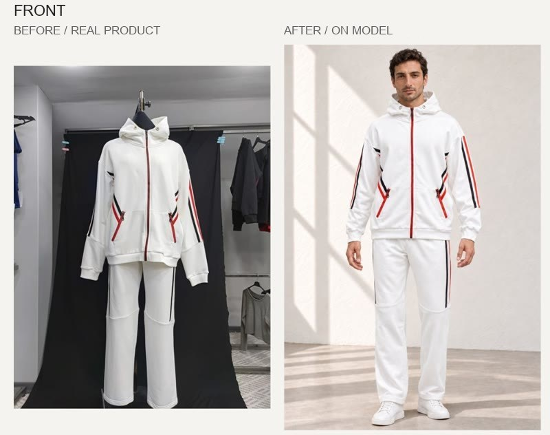
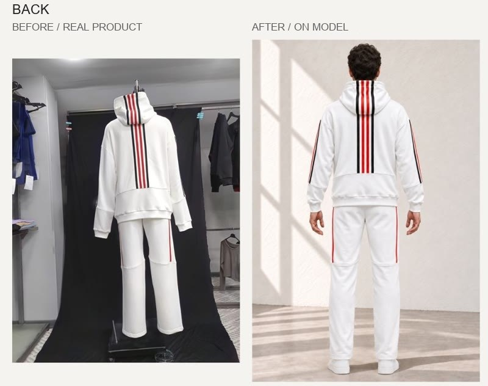

Brand collaboration
QUINZELL
From hanger to stage.

- Purpose and idea
- How far can a single product photo go? Starting from Quinzell’s ghost mannequin photos, we created on-model visuals and color alternatives. Showing the same products in different colors and scenes, the work also gave the team room to weigh their options before production.
- What MON handled
- Model styling, color work and video production moved forward in one process. The team can weigh production decisions by seeing the color alternatives on a model.
- Outputs and formats
- On-model product visuals, campaign visuals. Format: vertical visuals.
- Status
- Made as part of a brand collaboration with Quinzell.
The same product, first on the mannequin, then on a model: front and back.


Source photos were not altered.